Every number here is simulated. I had no access to Oura internal data. I built a generative model of 18 international markets whose structural anchors match figures Oura disclosed publicly in its Form S-1 (filed 3 September 2026): roughly 40% of new subscribers arriving organically, about 85% twelve-month paid retention, international markets under 20% of hardware sales.
The reason to simulate is that it lets me check the method against a known answer. That check is where the most interesting finding came from.
The question
Oura's S-1 names brand awareness and distribution expansion as the growth thesis, and describes a plan to enter underpenetrated markets with a disciplined, localized go-to-market approach. Behind that sits a planning question somebody has to answer with numbers: if we spend to build awareness in a new country, what happens to CAC, and does the answer depend on how big the country is?
The simulated world runs 18 markets over 36 months — 513 market-months — each with its own population, income, media cost, retail footprint, competitive intensity and launch date. Awareness is a decaying stock fed by reach. Acquisitions come from three channels, each of which awareness feeds differently: organic word of mouth, paid conversion lift, and retail sell-through.
43.5%
organic share of activations
(S-1 anchor: ~40%)
$125
blended CAC across markets
18
markets simulated
1.008
max r-hat across all parameters
What I found
Population washes out. At matched awareness, awareness-driven CAC is set by qualified buyer density and media cost — not market size.
log-population coefficient −0.11, t = −0.66, in a regression with R² = 0.95. Taken alone, population correlates +0.91.
An observational marketing mix model understates the awareness effect by about 69%, and its credible interval misses the truth entirely.
true γ = 1.81 against an estimated γ = 0.56
That bias has a price. It recommends putting 17% of budget into brand when the right answer is 44%.
costs 14.8% of activations at identical spend
Partial pooling is what makes forecasting a barely-launched market possible at all.
CAC forecast error 71% → 19% → 7% across no, complete and partial pooling
Brand-to-awareness and brand-to-acquisition need different carryover rates. Using one for both flips the sign of the brand coefficient.
θ = 0.95 for awareness against θ = 0.30 for acquisition
The model
Two stages, pooled across markets
The model only ever sees what a real team would have: spend by channel, a noisy awareness proxy, activations and country covariates. It never sees latent awareness or any true parameter.
κ tests whether awareness is more potent where qualified buyers are dense. It came back null — 0.06 ± 0.17. Awareness works about equally well everywhere; a point of awareness buys the same proportional lift in Finland as in Brazil.
That negative result is what makes the problem tractable. All the cross-country variation lives in the price of awareness and the size of the qualified base — two things you can measure — rather than in a per-country black box.
A trap worth knowing about
My first version used one carryover rate across both stages. That is wrong in a way that silently inverts the answer. Awareness is a stock that accumulates and decays slowly; brand spend is a flow that peaks at launch. So in raw monthly data the months with the most brand spend are the months with the least accumulated awareness, and the regression reports that brand spend destroys awareness.
With a 13.5-month half-life the adstock behaves like the stock it is meant to proxy and the slope turns positive, R² = 0.97. A team that runs one adstock search across the whole model will conclude brand does nothing — and ship a budget recommendation that is confidently backwards.
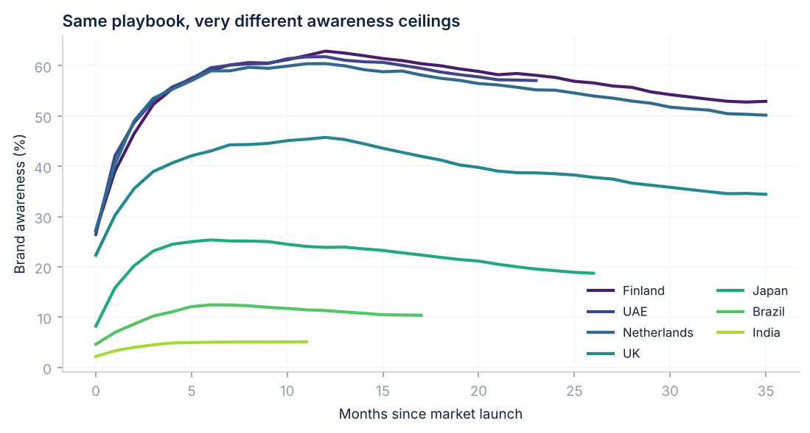
Recovery
The model fails, and the failure is the finding
Because I wrote the simulator, I can differentiate it analytically and get the true semi-elasticity of activations with respect to awareness. Then compare.
1.81
true awareness effect
0.56
what the MMM estimates
69%
understatement
No
does the credible interval cover the truth
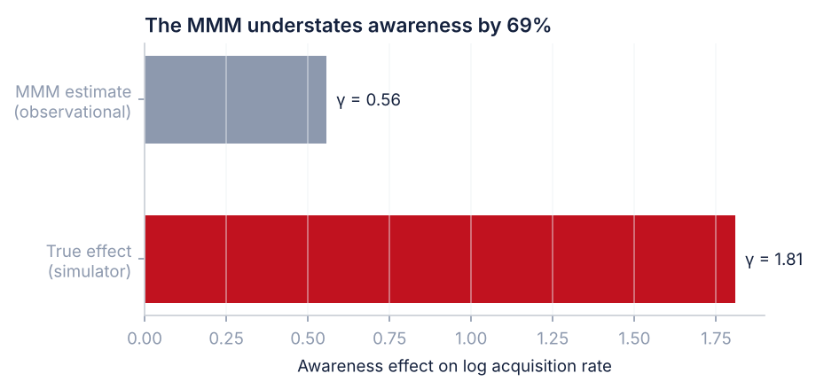
This is attenuation from confounding, not noise, and more data will not fix it. Brand spend, performance spend and penetration all move together, so the model has no way to isolate awareness's contribution and distributes it across the correlated regressors instead.
I want to be direct about what this means, because it is the opposite of the usual pitch for marketing mix modelling: an observational MMM is not a causal estimate of brand value. It is a decomposition that assumes it has the right controls, and when it is wrong about brand it is wrong in a systematic direction — downward — because brand is the channel most confounded with everything else.
I suspect that is a meaningful part of why marketing teams across the industry under-invest in upper funnel. The measurement system has a thumb on the scale.
Consequence
What the bias costs in a budget meeting
A bias only matters if it changes a decision. So: hold the budget fixed and ask what brand-versus-performance split maximises activations, once under the attenuated γ and once under the γ a geo experiment would deliver.
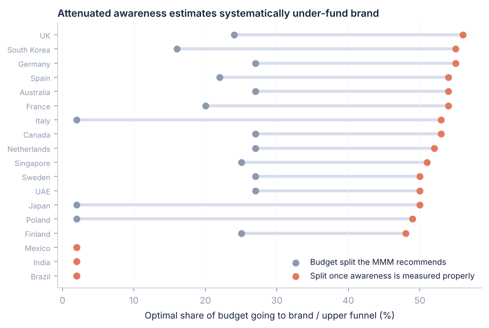
That last point is the one I would want to land. The recommendation is not "spend more on brand." It is "spend much more on brand in these fifteen markets and almost none in these three, and here is the parameter that separates them."
Priors do not fix confounding
My first attempt at the correction was to encode the geo-experiment result as a Bayesian prior on μγ and let the model update. It moves the posterior from 0.55 to 0.93 — partway — and then stalls, because 513 observations of likelihood pull hard the other way.
When a model is confounded rather than merely imprecise, a well-chosen prior just splits the difference between a good experiment and a bad identification strategy. The right move is to pin the brand coefficient to the experimental estimate and let the MMM allocate everything else conditional on it — treating the geo result as measurement rather than as evidence to be weighed.
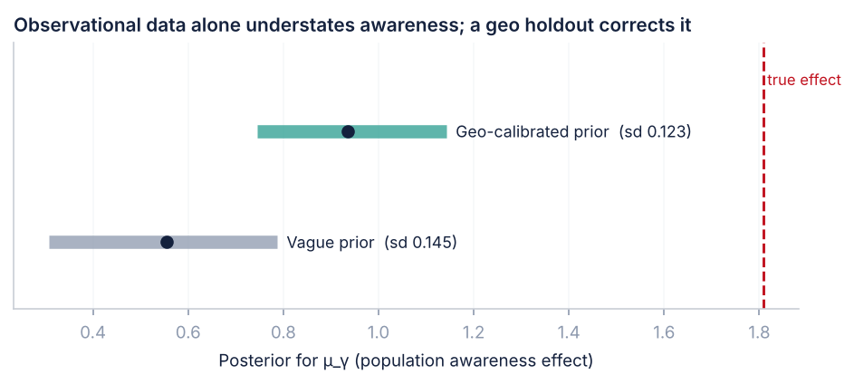
The country question
Why size is the wrong variable
The price of awareness scales almost linearly with population — reaching 15% awareness in India costs on the order of 300 times what it costs in Finland. So far this supports the instinct that large markets are forbidding.
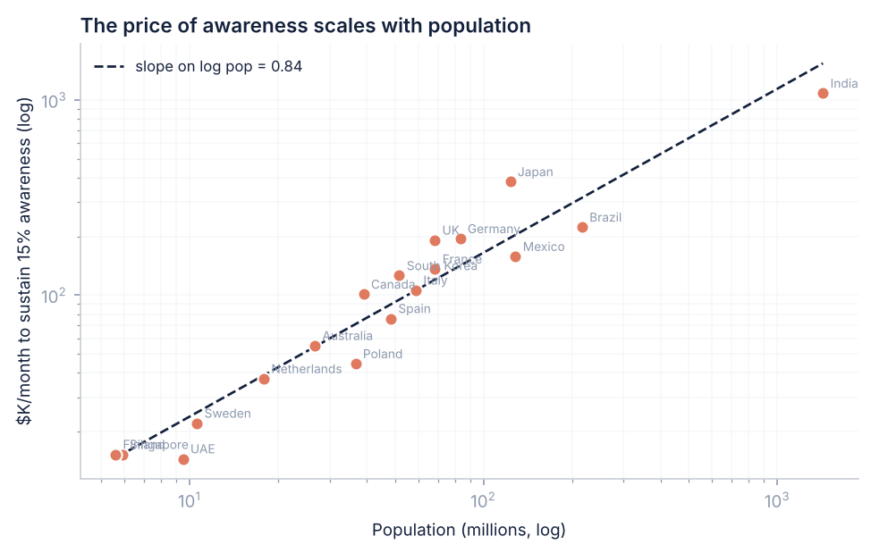
Taken alone, log population correlates +0.91 with awareness-driven CAC — exactly the misleading result that would justify avoiding large markets. Control for qualified density and media cost and the population coefficient collapses to −0.11, t = −0.66, in a regression explaining 95% of the variance. What survives is qualified density at −1.68 and media cost at +1.81.
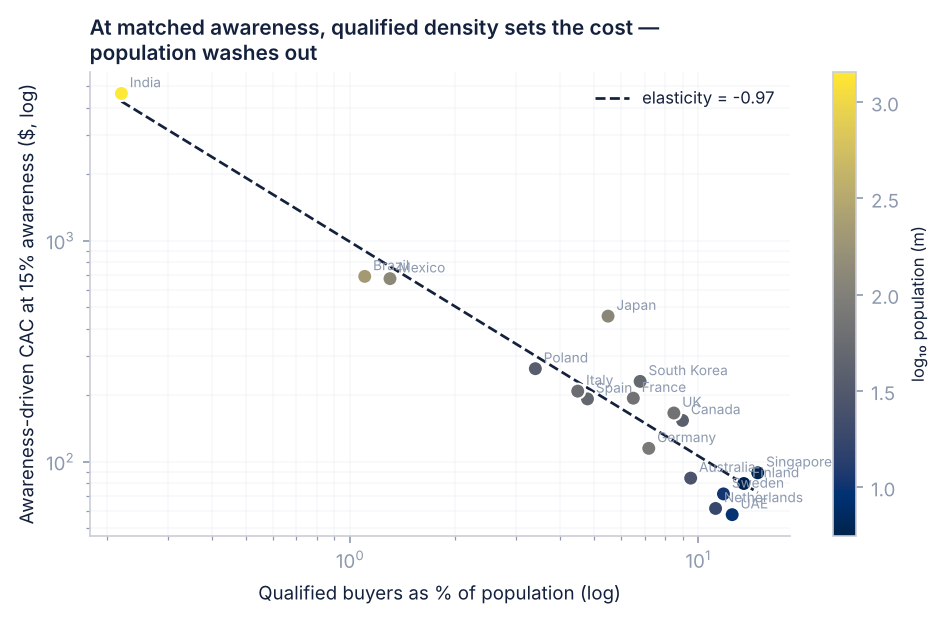
India is expensive not because it is large but because 99.8% of the people your awareness spend reaches cannot buy the product. Singapore is cheap not because it is small but because roughly one person in seven is a plausible buyer.
This reverses the planning heuristic. "Enter small markets first" is wrong. The rule is "enter dense markets first, at any size" — which makes a large, wealthy, concentrated market the best entry target available rather than the most daunting one.
Forecasting
A market with three months of history
The practical obstacle to all of this is that a new country has almost no data. So I ran the test that actually matters: Mexico enters with three months of history. Fit three ways on the other 17 full markets plus those three months, then forecast Mexico's next ten months of CAC.
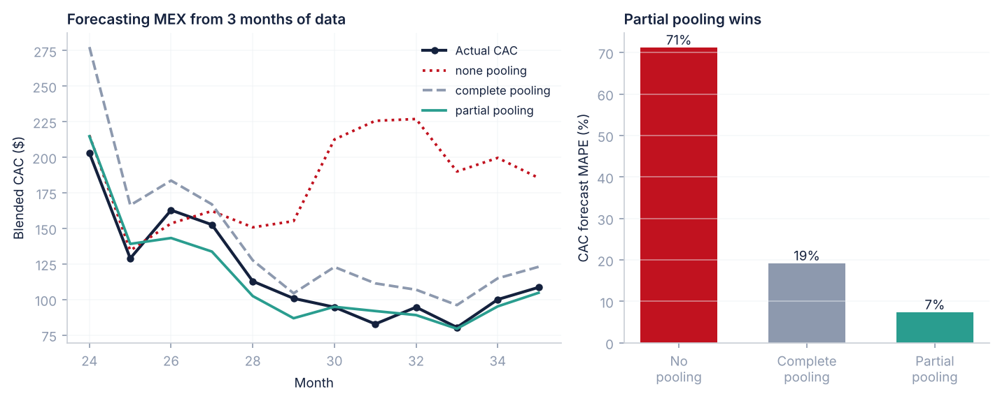
- No pooling fits Mexico on Mexico alone. Three observations, five parameters: the sampler threw 94 divergences and the forecast is unusable. This is what "let's wait until we have enough data" actually produces.
- Complete pooling applies one global coefficient set and does far better, but insists Mexico behaves like Germany.
- Partial pooling shrinks Mexico's coefficients toward the group mean, weighted by how little data Mexico has, and beats both by a wide margin.
Nobody chooses that weighting by hand. τ is estimated from the data, so the model works out for itself how similar these markets are. A mature market with four years of history is trusted on its own evidence; a market with one quarter is pulled toward the pooled mean. That is the whole argument for building one model across all 56 markets rather than 56 models.
Honestly though: the per-country intervals are wide and heavily shrunk, τγ = 0.18, which is consistent with the recovery failure above. The pooled mean is informative; the country deviations are not. A team reporting per-country brand ROIs off this model would be reporting noise.
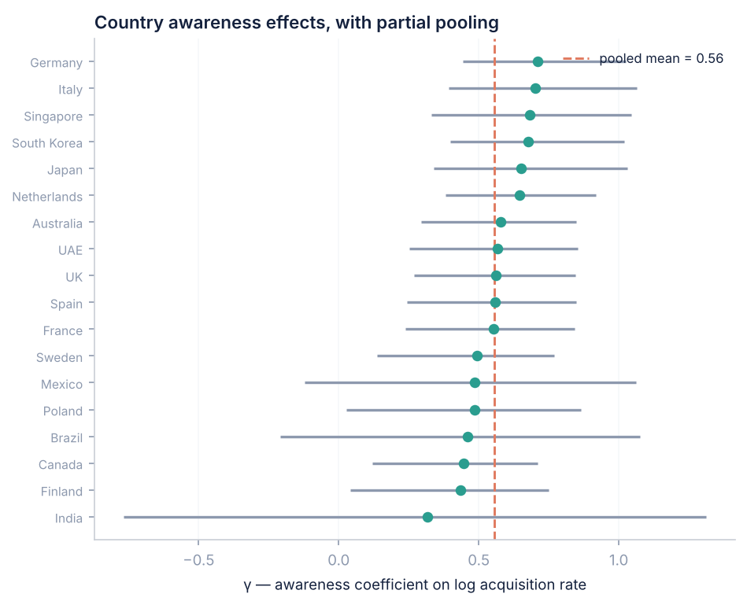
Decision layer
Coefficients are not decisions
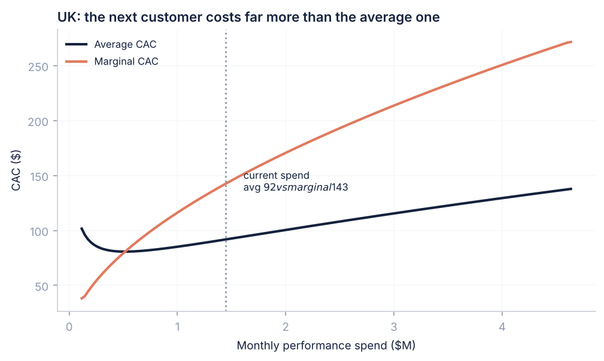
Average CAC is a reporting number; marginal CAC is the budgeting number. For a power-law response curve with exponent β, marginal CAC equals average CAC divided by β — so at β ≈ 0.47 the next customer costs roughly twice the reported average. The allocation rule that follows is to set spend so that marginal CAC is equal across every channel and market. If the UK's marginal CAC is $143 and Spain's is $95, the next dollar belongs in Spain regardless of which has the better average.
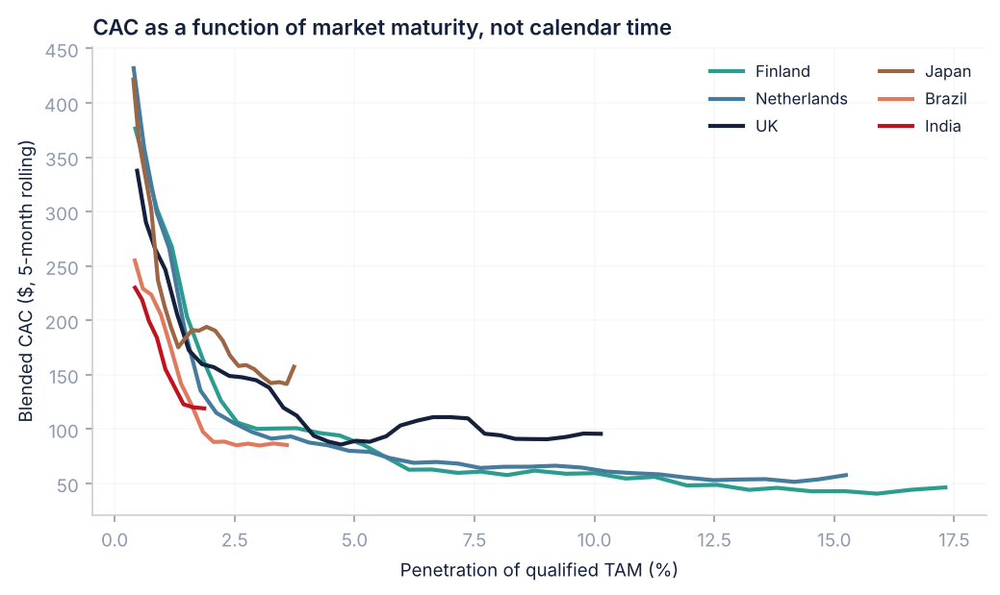
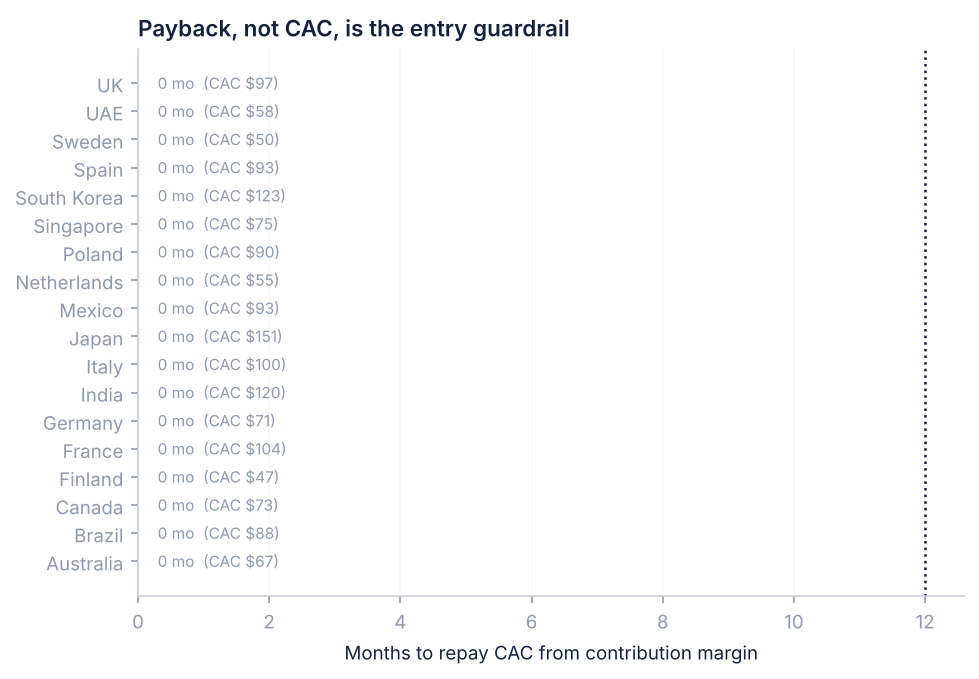
Which means CAC is the wrong guardrail. The business can tolerate a far higher CAC than a pure-subscription company could, so entry decisions should run on payback period against contribution margin. A market with $250 CAC and strong retention beats one with $120 CAC and churn, and optimising CAC directly gets that backwards.
Measurement
The trap I would raise first
In a retail-heavy market, awareness drives sell-through that direct-to-consumer attribution cannot see. Brand spend goes up, retail units move, and DTC CAC gets worse — so the reporting metric punishes the thing that is working. Across these simulated markets, measuring CAC on DTC alone overstates it by about 12% on average.
Oura has an unusual escape. Every ring has to be activated in the app to be usable, which makes app activation a universal, geolocated acquisition event across DTC, Amazon and roughly 8,400 retail doors. Most consumer hardware companies cannot measure retail-driven acquisition at all. Model activations, not orders — everything here does.
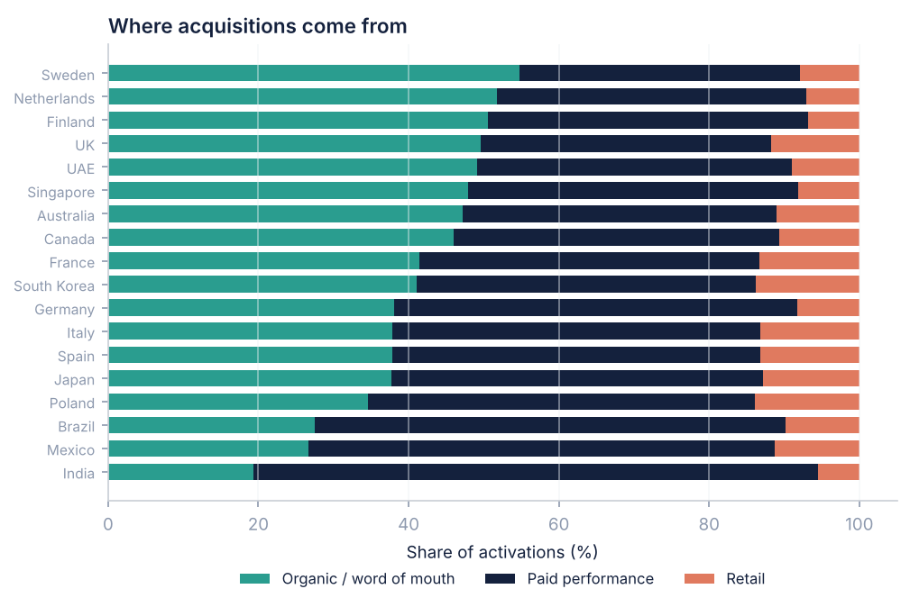
What I would actually do with this
- Build one hierarchical model across all 56 markets, not 56 models. Partial pooling is what lets a market with a single quarter of data get a usable forecast.
- Run a standing geo-holdout programme on upper funnel, because the observational model cannot see brand and is biased downward by roughly 69%. Pin the brand coefficient to the experimental estimate rather than treating it as a prior.
- Report marginal CAC and payback period, computed on activations rather than DTC orders. Average DTC CAC is the metric most likely to make good brand work look like failure.
- Select markets on qualified density, not size. The heuristic "start small" is wrong; the rule is "start dense."
Limitations, on the record
- All data is simulated. The structural conclusions follow from my generative model, and real data could behave differently — most plausibly if awareness effects vary by market in ways my simulator holds constant.
- Carryover rates are grid-searched rather than jointly estimated, so that uncertainty is not propagated.
- The geo experiment is simulated at a precision a real test would need meaningful spend and several weeks to achieve.
- Qualified density is invented. In production it is a research deliverable, and the entire result is sensitive to it — which is itself an argument for investing in getting it right.